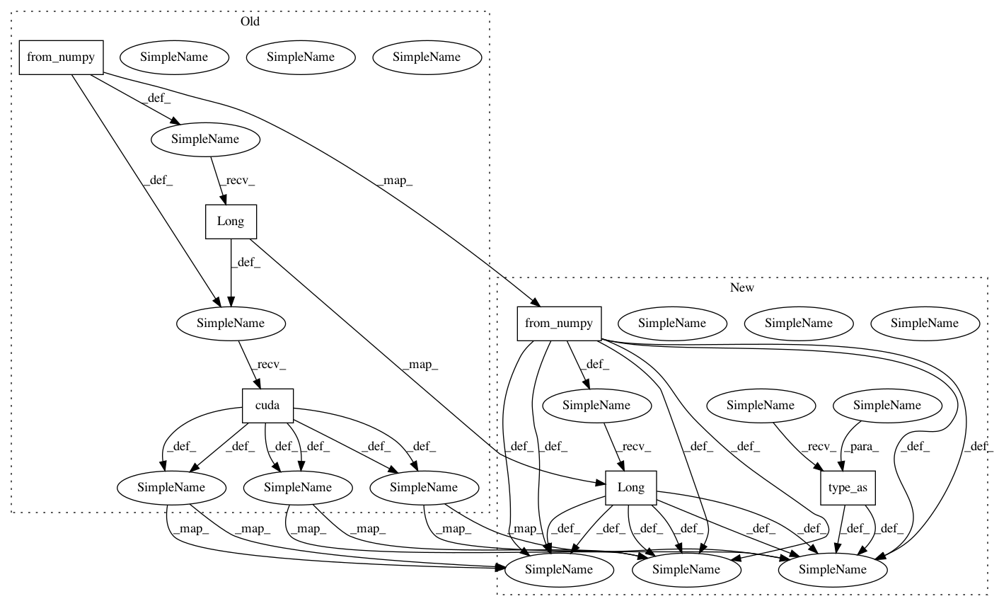

3e4c8751ecea36db6c23f05ccff1019fbd3e1b55,lib/model/rpn/proposal_target_layer_cascade.py,_ProposalTargetLayer,_sample_rois_pytorch,#_ProposalTargetLayer#,114
Before Change
// sampling bg
//rand_num = torch.floor(torch.rand(rois_per_image) * bg_num_rois).long().cuda()
rand_num = np.floor(np.random.rand(rois_per_image) * bg_num_rois)
rand_num = torch.from_numpy(rand_num).long().cuda()
bg_inds = bg_inds[rand_num]
bg_rois_per_this_image = rois_per_image
fg_rois_per_this_image = 0
else:
print("bg_num_rois = 0 and fg_num_rois = 0, this should not happen!")
pdb.set_trace()
// The indices that we"re selecting (both fg and bg)
keep_inds = torch.cat([fg_inds, bg_inds], 0)
// Select sampled values from various arrays:
labels_batch[i].copy_(labels[i][keep_inds])
After Change
// sampling fg
//rand_num = torch.floor(torch.rand(rois_per_image) * fg_num_rois).long().cuda()
rand_num = np.floor(np.random.rand(rois_per_image) * fg_num_rois)
rand_num = torch.from_numpy(rand_num).type_as(gt_boxes).long()
fg_inds = fg_inds[rand_num]
fg_rois_per_this_image = rois_per_image
bg_rois_per_this_image = 0
elif bg_num_rois > 0 and fg_num_rois == 0:
// sampling bg
//rand_num = torch.floor(torch.rand(rois_per_image) * bg_num_rois).long().cuda()
rand_num = np.floor(np.random.rand(rois_per_image) * bg_num_rois)
rand_num = torch.from_numpy(rand_num).type_as(gt_boxes).long()
bg_inds = bg_inds[rand_num]
bg_rois_per_this_image = rois_per_image
fg_rois_per_this_image = 0
else:
error("bg_num_rois = 0 and fg_num_rois = 0, this should not happen!")
// The indices that we"re selecting (both fg and bg)
keep_inds = torch.cat([fg_inds, bg_inds], 0)
// Select sampled values from various arrays:
labels_batch[i].copy_(labels[i][keep_inds])
In pattern: SUPERPATTERN
Frequency: 3
Non-data size: 6
Instances
Project Name: jwyang/faster-rcnn.pytorch
Commit Name: 3e4c8751ecea36db6c23f05ccff1019fbd3e1b55
Time: 2017-09-07
Author: echosenm@gmail.com
File Name: lib/model/rpn/proposal_target_layer_cascade.py
Class Name: _ProposalTargetLayer
Method Name: _sample_rois_pytorch